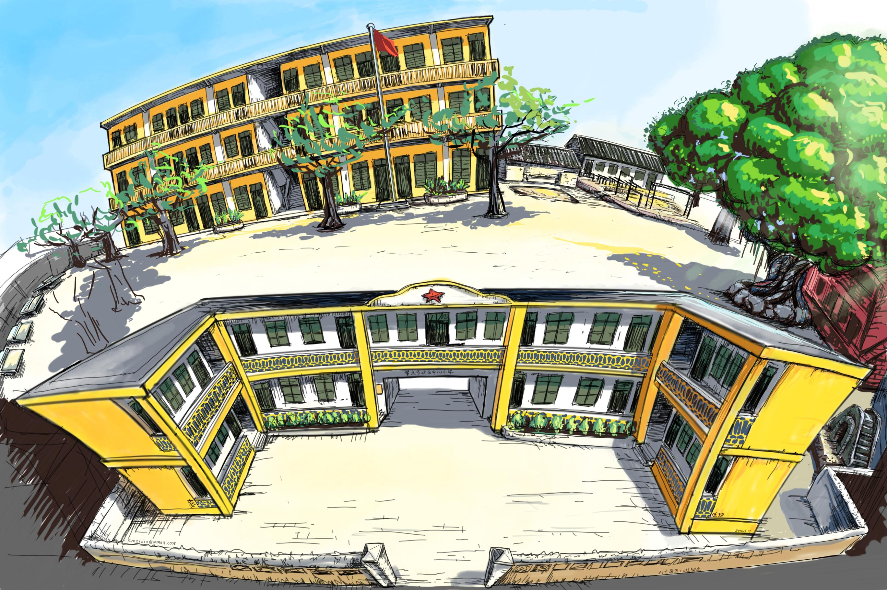
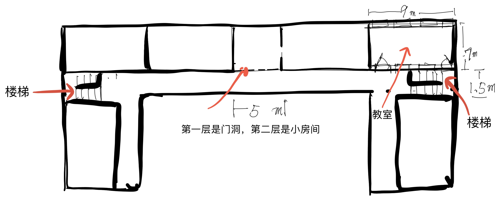
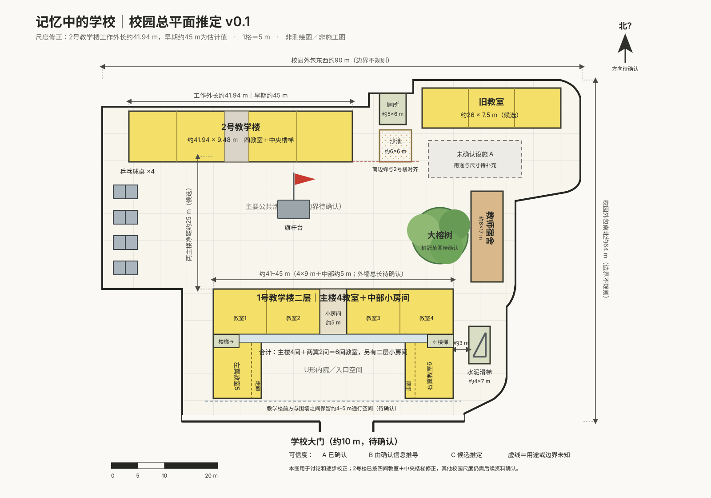
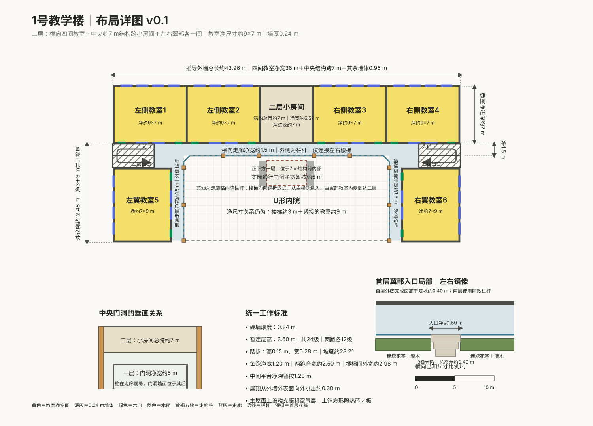
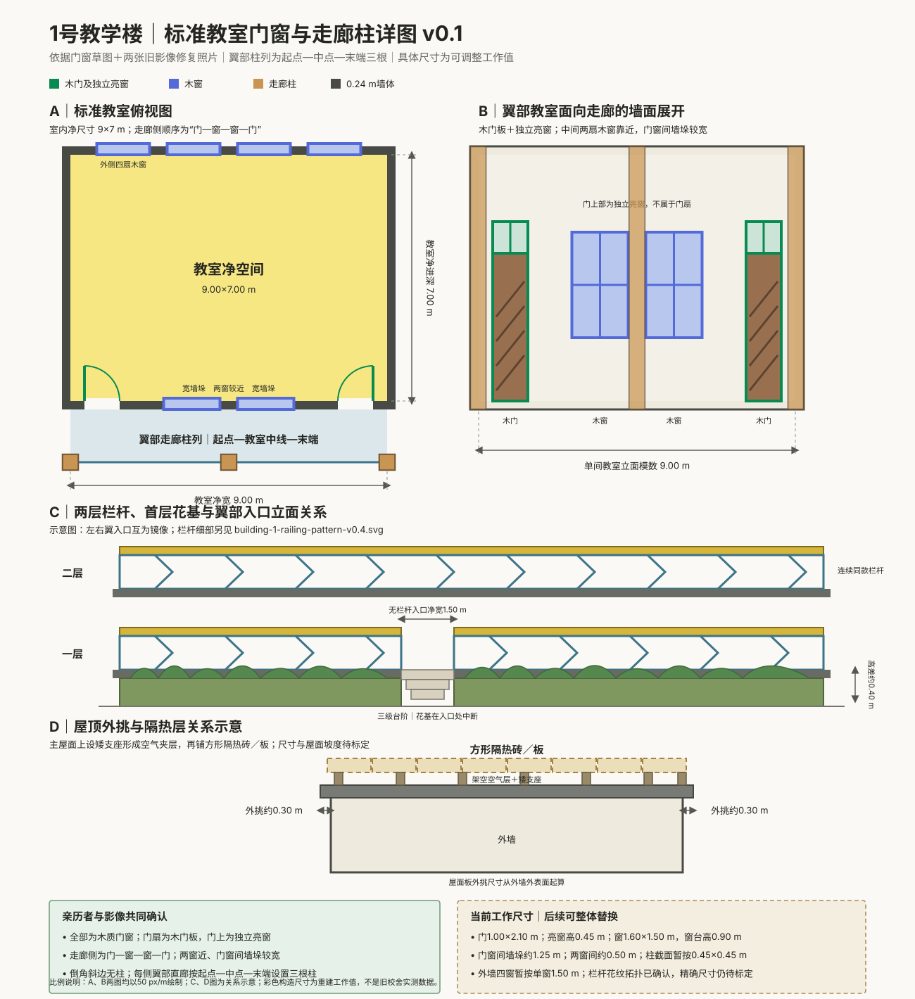
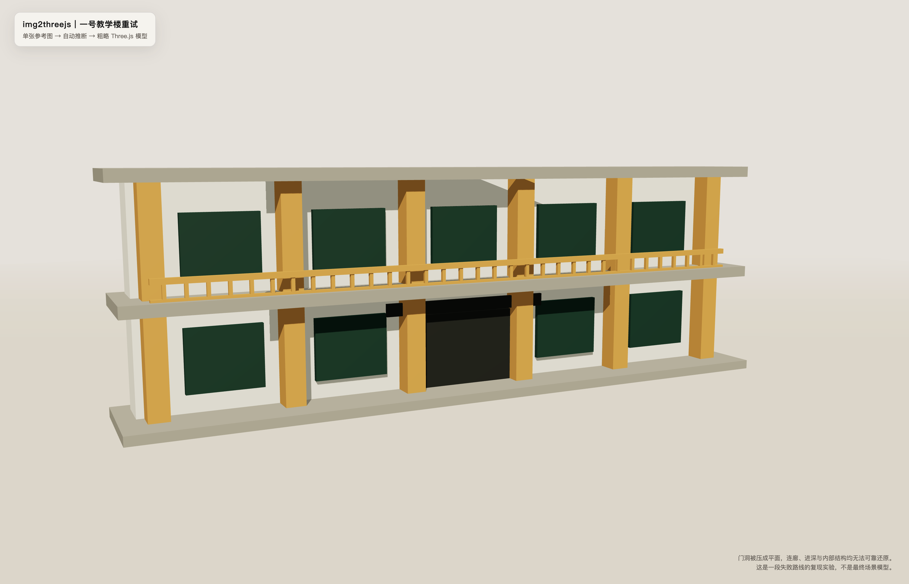
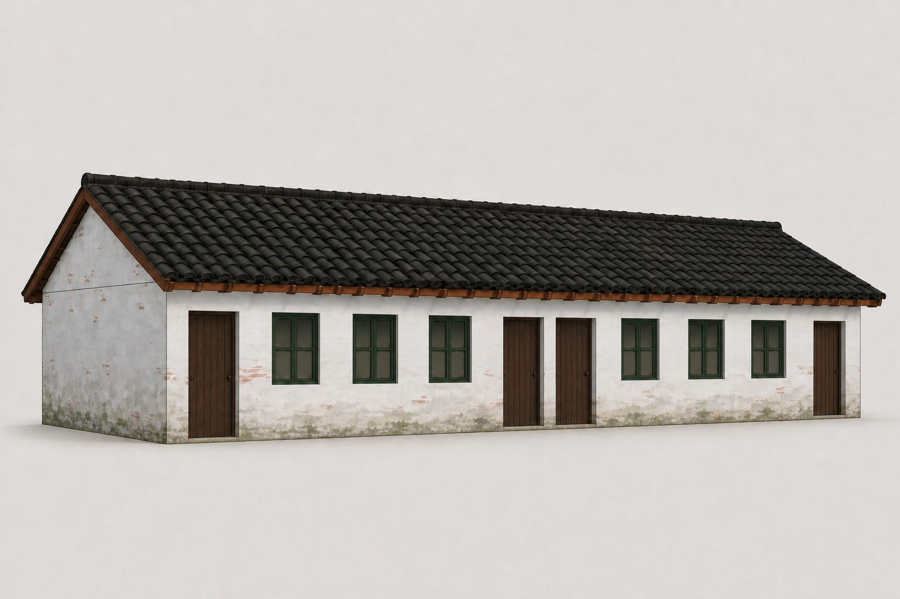
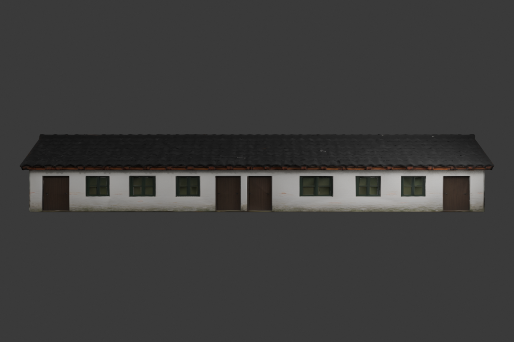
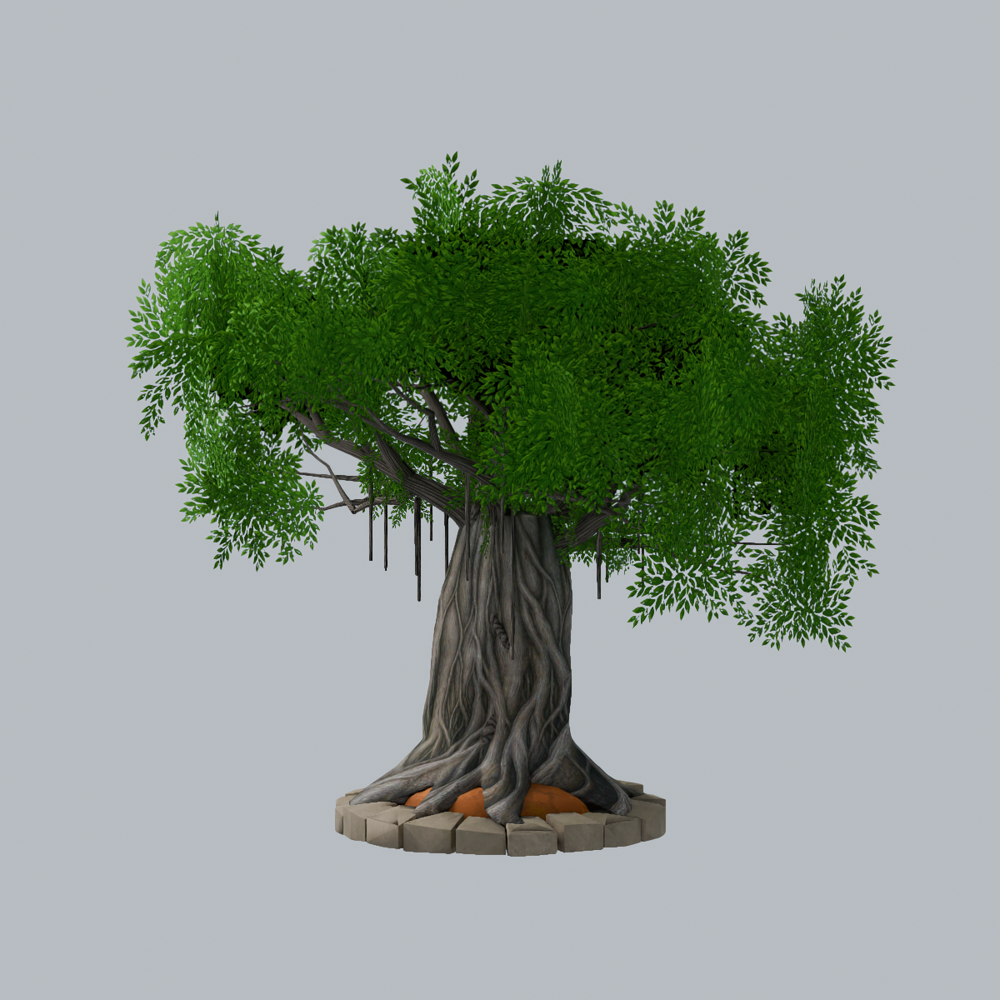

现在常见的 AI 3D 展示，往往只需要一张图。
图片交给模型。等一会儿。一个完整的三维场景就出现了。
这种 one-shot 建模很直观，也很容易让人惊讶。我们在 4Lite 开始时也试过。但这个项目要解决的不是“怎样最快生成一所学校”，而是怎样忠实还原我心目中的那一所学校。
我要的不是一个看起来合理的校园。校门、两栋教学楼、操场、旧教室、教师宿舍、大榕树，它们之间的关系不能由 AI 自由发挥。建筑和物件也不能只在一个角度看起来相似。它们要能被放进同一个空间，能够走近、绕到背后、进入室内，还要在我发现记忆有误时继续修改。
因此，从记忆到 3D，我们没有找到一个万能按钮。我们试了几种不同的方法。
项目的起点是两张普通合照，以及一张最早用来复原校园的整体概念草图。它已经画出一号教学楼、二号教学楼、旧教室和大榕树的大致外形，也保留了我对校园色彩和空间气氛的第一层记忆。

随后，我又在 iPad 概念画板上凭记忆补画了校园布局草图，进一步标出建筑和物件之间的关系。
草图能说明哪些建筑在什么位置，却说不清完整外观。照片保留了部分立面和年代细节，也看不到建筑背面和整个校园。更多内容仍在我的记忆里，需要在看到新画面后继续确认。
接下来，不是我亲自去画施工图或操作建模软件，而是把草图、照片和口述交给 ChatGPT。整个数字制作过程都由 ChatGPT 完成：我负责回忆、判断和提出修改，ChatGPT 负责把这些判断逐步变成可以检查的图纸、模型和场景。
ChatGPT 先把这些零散输入变成两类可以检查的图。
一类是概念图。它帮助我们确认建筑、物件和树木大致应该长什么样，画面的颜色、材质和年代感是否接近我的记忆。
另一类是用 SVG 绘制的平面图、结构图和尺寸详图。它们把草图里的关系整理得更清楚：建筑怎样排列，门窗在哪里，走廊朝哪个方向，楼梯怎样转折，地面和高台怎样连接。


草图保留人的判断，平面图把判断变成可以继续建模的结构。
但从草图到可走动的 3D 场景，中间不能只靠一张总平面。ChatGPT 还要继续把校园拆成单栋建筑布局、门窗排列、走廊柱、楼梯和工作尺寸。对程序化建筑来说，概念图是外观参考，这些 SVG 图纸才是把记忆接到三维结构上的直接依据。


总平面确定校园关系，单栋布局与尺寸详图继续把它拆成可执行的建筑参数。
概念图回答“它应该长什么样”。SVG 图纸回答“它在空间里怎样成立”。程序化参数再把图纸变成可以走进去检查的场景。我负责判断结果是不是记忆中的那个形，ChatGPT 负责完成从绘图到建模、再到场景整合的全部执行工作。
图确认之后，才开始真正的 3D 制作。
最先尝试的是 Image2Three.js Skill。
当时我们把它当作最直接的路线：输入一张图片，快速得到一个可以运行的 Three.js 三维结果。后来重新实验时才看得更清楚：它并不是真的“一键得到完成模型”，而是让 ChatGPT 根据单张参考图写出程序化模型，再经过规格、渲染和修正逐步逼近。
最初尝试制作的并不是旧教室，而是草图中的一号教学楼和二号教学楼。我们希望把这张校园草图直接变成三维建筑，但生成结果只能抓住黄色立柱、白色墙面和两层立面这些表面特征。中央门洞被压成平面，连廊、建筑进深、楼梯和内部结构都无法可靠成立。
最初那次尝试没有留下可用截图。为了补齐过程证据，我们后来仍然使用这张最早的校园概念草图，对一号教学楼重新做了一次失败路线复现。

这次重试不是原始历史截图，而是使用同一张早期草图复现当时的问题：一张图可以提供外观线索，却不能自动给出忠实、可行走的校园结构。
但它没有达到这个项目的要求。
一张图片只能提供一个视角。被挡住的部分、建筑背面、真实进深和内部结构，都需要 ChatGPT 推断。生成结果可能像一座校园，却不一定是我记忆里的校园。画面越完整，反而越容易让未经确认的猜测看起来像事实。
更重要的是，4Lite 不是一张三维插画。玩家要从校门进入，穿过一号教学楼中央的门洞，再走到操场；要进入教室、上下楼梯、开合门窗。每一部分都要有明确尺寸、位置、结构和碰撞。一次生成的整体结果很难承接后面的反复修改。
所以这条路线很快被放弃。
我们随后改用程序化构建。图纸确认后，ChatGPT 把 SVG 中的空间关系和工作尺寸转成 Three.js 参数，建立墙体、楼板、柱、门窗、走廊、楼梯和地面。建筑不是一个无法拆开的整体模型，而是一组由尺寸和坐标控制的结构。
这让校园可以一步一步长出来。
我走进场景，发现楼太高、走廊太窄或门洞位置不对，ChatGPT 就修改对应参数。空间关系改变，不必重新生成整座校园。建筑、第一人称视线、碰撞和最终运行环境，也从一开始就在同一套坐标里。

一键生成给了我们一个结果。程序化构建给了我们一个可以继续工作的工程。
但校园里不只有规则建筑。厕所、教师宿舍、旧教室、滑梯、课桌和各种年代物件，都有自己的轮廓和材质。全部用基础几何和程序代码搭建，并不是最合适的选择。
于是我们又采用了另一条路线：ChatGPT 先根据草图、照片和我的说明制作概念图；我确认外形后，ChatGPT 再把概念图交给腾讯混元 3D，由混元 3D 根据这张概念图生成带 UV 和贴图的三维模型。最后，ChatGPT 将模型导出为 GLB，放进游戏场景中检查。人不需要在不同软件之间手工接力，整条执行链仍由 ChatGPT 完成。
旧教室就是用这条路线完成的。它不是 ChatGPT 在 Blender 中建立的模型，而是混元 3D 根据 ChatGPT 创建并经我确认的概念图生成的。


ChatGPT 负责把人的描述变成明确的概念图，混元 3D 再把这张图转换为带 UV 和贴图的模型。
这种方法能很快把一张已经确认的概念图变成可用的独立模型。它适合一部分能够从外形和表面特征表达清楚的资产。但模型的结构、比例和细节仍然受生成结果限制。放进校园后，如果某一部分不像，未必能够准确修改。
后来，我们越来越多地让 ChatGPT 直接在 Blender 中完成建模。
概念图仍然负责确定外形，草图和结构说明负责提供约束。不同的是，ChatGPT 不再等待图片自动变成模型，而是直接操作 Blender，建立几何、调整比例、制作材质和 UV，再导出 GLB。哪一扇门的转轴不对，哪一段屋檐太厚，哪一根树枝方向不对，都可以单独修改。
这条路线没有 one-shot 那么快，却最能承接我的连续判断。它后来成为正式资产主要采用的制作方式。
最后，4Lite 没有只使用一种 3D 方法。
校园空间和规则建筑主要使用程序化构建。适合快速生成的部分独立资产，可以使用概念图加混元 3D。需要精确结构、特殊轮廓和多轮修改的正式资产，则由 ChatGPT 在 Blender 中直接制作。
我们放弃的，是让一张图片一次生成整个校园。
这几种方式并不是在比赛谁生成得最快。它们都是还原记忆中 3D 场景的手段。选择标准始终只有一个：哪种方式更能忠实还原我心目中的那个形，并且允许我在看到结果后继续判断和修改。
整个流程因此变成了一次循环：我提供记忆、草图和反馈，ChatGPT 制作概念图与 SVG 图纸，选择合适的方法完成 3D，再把结果放回真实场景；我走进去检查，指出哪里不像，ChatGPT 再继续修改。
人负责目标和审美判断，ChatGPT 负责完整执行。AI 在这里不是替人决定校园应该长什么样，而是把人心里那个尚未被完整表达的形，一步步落实成可以查看、测量、修改和行走的空间。
AI 可以很快生成一棵“像榕树的树”。但校园里的大榕树不是随便一棵榕树。它的树干、主枝、板根、气根、树冠高度和叶簇位置，都对应着我记忆中的那个形。

混元 3D 生成的模型做不到这种效果。最后，大榕树和校园里的各种树木都改为在 Blender 中直接制作。为了接近记忆里的形，大榕树经历了很多次调整。
下一篇，从这棵最难还原的树开始。